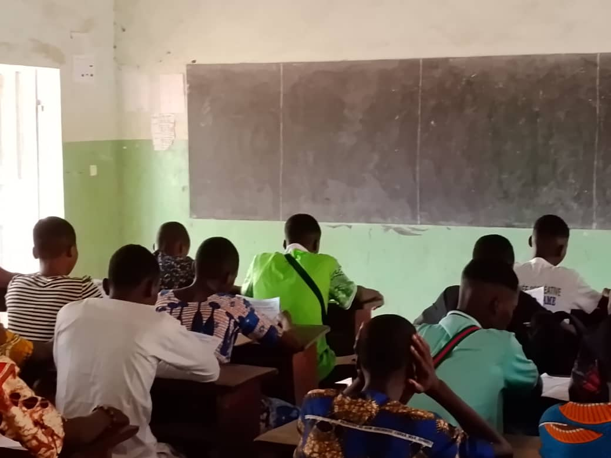

Note politique : L'impact des bulletins scolaires comparatifs School Report Cards in Developing Contexts
Une analyse approfondie de l'impact des systèmes d'évaluation et de reporting de la performance scolaire sur la prise de décision des parents d'élèves en Afrique de l'Ouest.
Cette note de politique met en évidence comment la transparence accrue, apportée par la distribution de bulletins scolaires simplifiés et comparatifs, responsabilise les établissements et dynamise l'implication des communautés locales. En simplifiant les indicateurs scolaires complexes pour les parents d'élèves, ce dispositif lève l'asymétrie d'information et induit de meilleurs arbitrages budgétaires et de suivi éducatif.
A deep analysis of how school performance reporting systems and standardized scorecard transparency shape parental decision-making and academic engagement in developing contexts.
This policy brief highlights how improved informational clarity, powered by targeted school report cards, strengthens accountability between local educational networks and parents. By translating complex administrative scores into readable, comparative student metrics, this framework successfully bridges severe information gaps, triggering smarter household investments and parental follow-up.
Résultats clés du dispositif Core Policy Outcomes
35%
Engagement Parental Parental Engagement
22%
Responsabilisation School Accountability
18%
Arbitrages Budgétaires Better Allocations
Protocole de recherche Policy Brief Foundations
Diagnostics et Audits Scolaires School Performance Audits
Suivi exhaustif des performances, des taux de réussite et de la répartition des ressources matérielles. Comprehensive score tracking, local enrollment ratios, and school physical infrastructure mapping.
Enquêtes Ménages Ciblées Household & Parent Surveys
Évaluation des changements de comportement parentaux, du soutien aux devoirs et des contributions financières. Measuring behavioral updates, home tutoring hours, and community-led school support contributions.
Consultations Institutionnelles Ministry & Institutional Dialogues
Entretiens qualitatifs réguliers avec les directions d'écoles, les mairies et les représentants ministériels. Semiannual qualitative interviews bridging village-level operational findings directly to ministerial councils.
Publications & Données annexes Publications & Brief Downloads

Rebecca Thornton
Professeure Associée Lead Researcher
Rebecca Thornton est professeure d'économie et spécialiste reconnue des politiques éducatives et de la santé dans les pays en développement. Elle dirige plusieurs études d'impact en collaboration avec le KEMT. Rebecca Thornton is a professor of economics and a leading expert in education policy and global health in developing economies. She leads multiple randomized impact evaluations with KEMT.